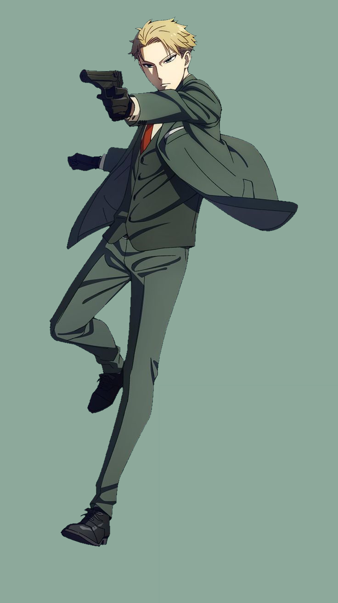
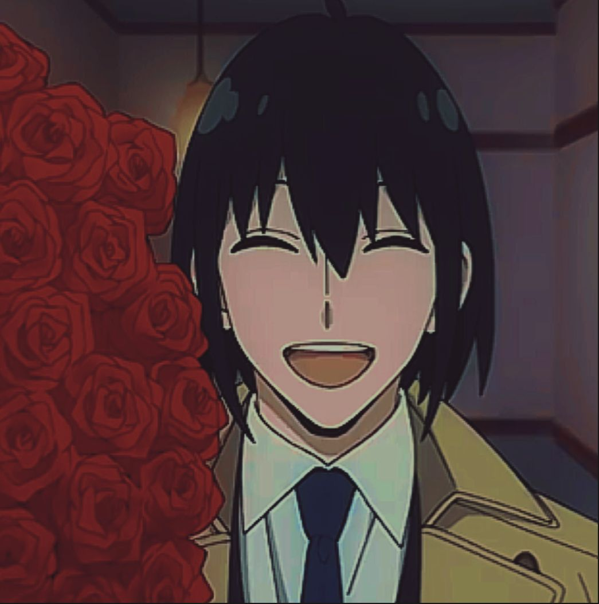

Loid Forger
Loid Forger is the main character in Spy X Family. Loid has discarded everything about his past for him to be able to work as an undercover spy for the country, with the code name "Twilight". For his current mission, he is required to marry someone, and have a child. Thus, he enters a marriage with Yor and becomes the adoptive father of Anya.
Appearance
Loid is a handsome man with short blond hair, blue eyes, and light skin. His hair is often slicked back to varying degrees, depending on the occasion. He is quite tall, has an athletic build, and has big ears. His exact age is unknown, although his history and appearance point to him being in his late twenties.
|

|
|---|
|
Yor Forger(Wife) |
Anya Forger(Daughter) |
Bond Forger(Pet) |
 Yuri Briar(Brother in law) |
|---|